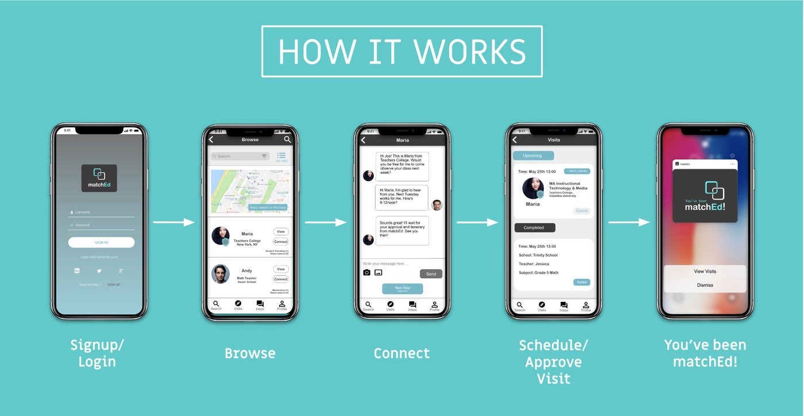
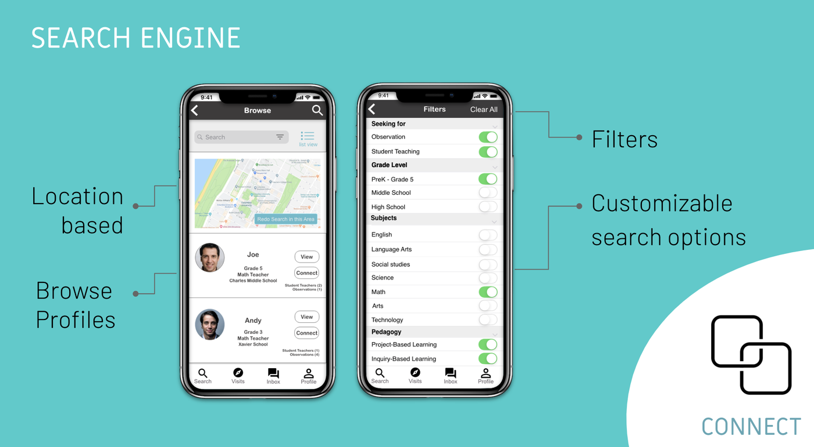
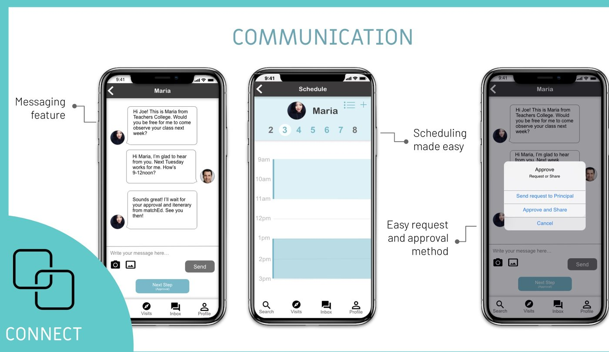
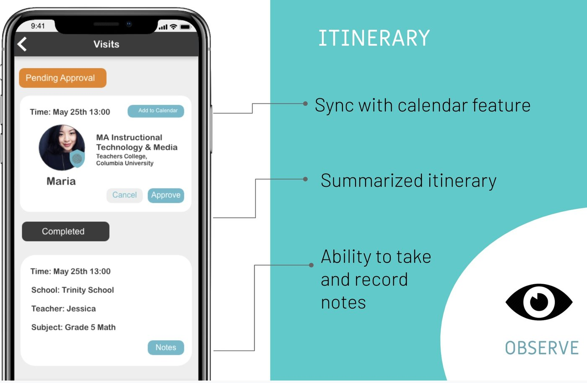
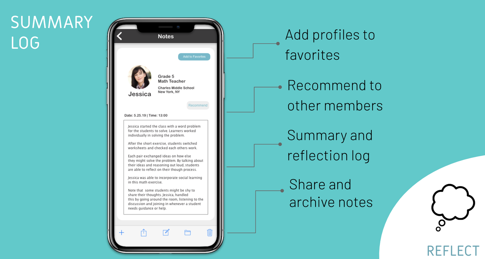
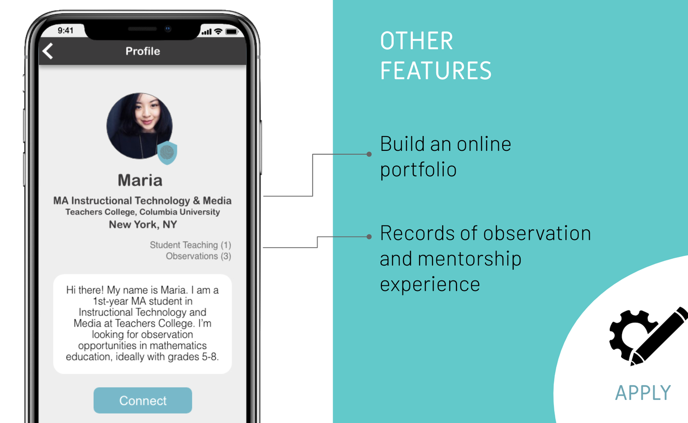

Designed by Laura Bloch, M.A. Instructional Technology & Media, with Joan Calandria-Nelson, M.A. Technology Specialist; Dongxin Li, M.A. Instructional Technology & Media; and Zhe Shi, M.A. Communication & Education.
Problem
Education students and in-service teachers have a hard time finding and connecting with each other for observation and mentorship opportunities.

Goal
matchEd aims to connect education students and in-service teachers to help facilitate inquiry, observation, student-teaching, and reflection.



